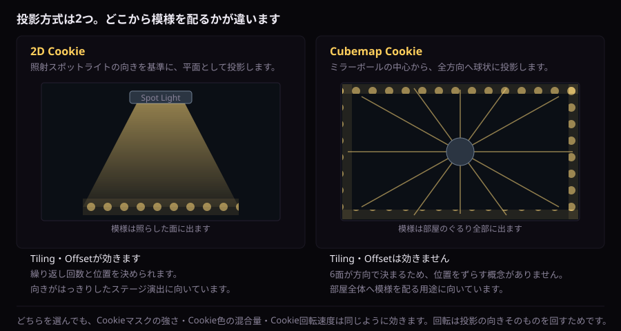

見え方を決める
2D・Cubemap Cookieの投影
光点の代わりに模様を投影します。Sceneビューでの確認方法もここです。
高度な投影Cookie
| 表示名 |
初期値 |
効果 |
| 投影Cookieを使用 |
OFF |
Cookie Keywordを有効にします。 |
| 投影方式 |
2D Cookie |
OFF／2D／Cubemap。用途に一致するTextureを指定します。 |
| 2D投影Cookie |
なし |
Spot Light方向を基準に平面投影します。 |
| Cubemap投影Cookie |
なし |
ミラーボール中心から全方向へ球状投影します。 |
| Cookieマスクの強さ |
1 |
0で無効、1でCookieマスクを完全適用します。 |
| Cookie色の混合量 |
0 |
0は明度マスクだけ、1はCookieのRGB色も強く反映します。 |
| Cookieタイリング |
(1,1) |
2D Cookieの繰り返し倍率です。 |
| Cookieオフセット |
(0,0) |
2D CookieのUV位置を移動します。 |
| Cookie回転速度 |
0 |
Cookie自体を時間回転させます。負数で逆方向です。 |

Tiling・Offsetは2D Cookieだけの設定です。マスクの強さ・色の混合量・回転速度は、どちらの方式でも同じように効きます。
2Dは照射方向が明確なステージ、Cubemapは部屋全体へ模様を配る用途に向いています。
サンプルCookie・マスク一覧から、2D／Cubemap用のPNGを利用できます。
Sceneビュー投影プレビュー
| 投影プレビューを表示 |
Scene Viewにガイドを表示します。ゲーム実行やビルドには描画されません。 |
| プレビュー光線数 |
16 / 4–64。多いほど輪郭を把握しやすい一方、Scene表示が増えます。 |
| プレビュー半径 |
5 / 0.5–30。ガイドの表示距離です。 |
次へ：ライブプリセット →
同梱のサンプルTexture・マスク
追加のプロシージャル形状はTexture不要です。座標投影とフォールバック確認には、既存の2D／Cubemap Cookie・マスクと形状アトラスを使用できます。
同じサンプルはUnityPackage／ZIPのAssets/MirrorBallLight/Samples/にも収録され、Cubemap CrossはCube、2D／Atlasは2D TextureとしてImport設定済みです。
{kind=link}